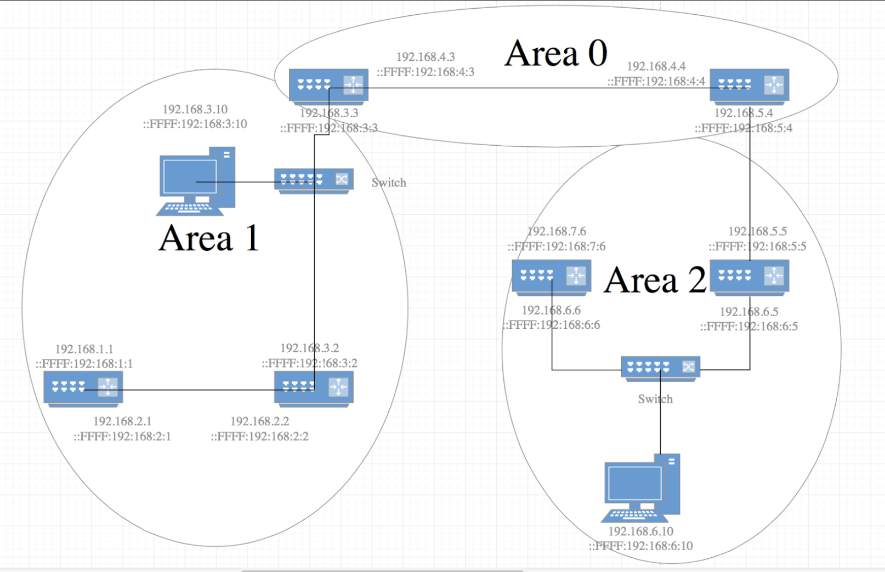
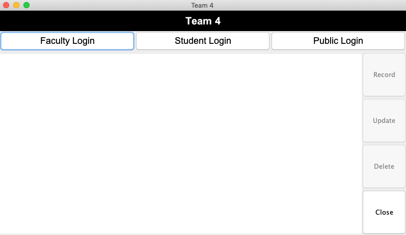
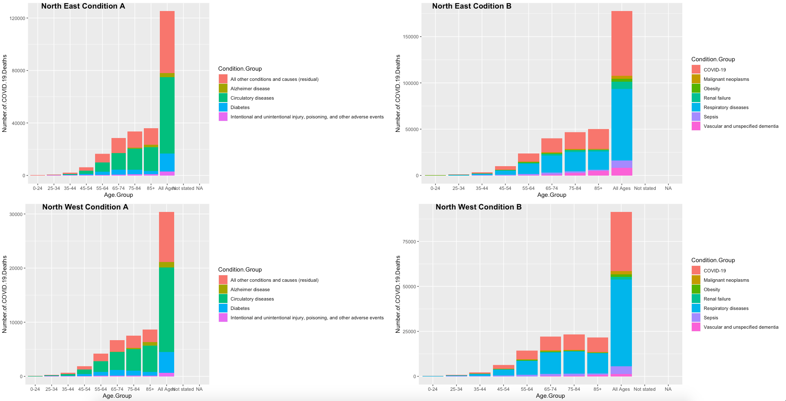

| Name |
Description |
Tools |
Day |

Java Connect Four |
- On the left is a Java board game.
Top side is server and the botton side is client, they are both completed with Javax.swing.
Server-
- Display the IP address of the current device.
- Able to connect multiple clients by multithread.
- Run the game logic and send the data to the corresponding client.
Client-
- Able to connect the server by IP address.
- Able to receive the data sent from the server.
- Perform different functions according to the transmitted data
- Comes with a chat system
|
Java8: JGrasp |
October - December 2017 |

OSPF2&3 Experiment |
- Conclusion
-
- The areas can communicate with each other via IPv4.
- The routing tables contain the correct information about the other areas.
- Routes are not learned when IPv4 is disabled on area 2.
- OSPFv3 and OSPFv2 are use many of the same LSA types.
- OSPFv3 with IPv4 and IPv6 had twice the overhead
- OSPFv3 uses IPsec offered with IPv6
|
Wireshake
|
January - May 2018 |

Database Connectivity and Access
|
- A Java client connected to the MySQL server that able to read data from MySQL.
Java Client-
- Log into the database through the account stored in the database.
- Different identities have different functions.
- Wrote SQL queries to retrieve data from the database using JDBC and output the data to the Java GUI client.
MySQL Server-
- Created tables and keys that to create connection between tables.
- Able to execute the SQL queries to insert and modify the data.
- Stored Procedures has been used.
|
Java8: JGrasp
MySQL: MySQL Workbench
|
October - December 2019 |
Steam Database Application
(No image)
|
- A Java client for a database application running the Steam Web API
Presentation Layer-
- Ability to display results and XML data.
Database Layer-
- Created tables and keys that to create connection between tables.
- Wrote SQL queries to retrieve data from the database using JDBC.
- Stored Procedures has been used.
-
Application Layer
- Retrieve json data from the Steam Web API.
- Stored jason data into hashmap with appID and name.
Business Layer
- Provide search functions based on name or appID.
- It will appear the games contains this wordwhen you choose to search for the name.
|
Java8: JGrasp
MySQL: MySQL Workbench
|
February - May 2020 |

COVID-19 Data Mining |
Problem-
- Analyze the data from the past six months and create a report that advises the client company on which specific condition group in which state of the United States needs the most medical resources.
Data Exploration-
- We divide the data into 4 regions, north east, north west, south east and south west.
- We also separate the condition group to two sections which is A (Top 6) and B (Bottom 6).
- On the left side is the some example of data exploration.
-
Data Preprocessing
- Wrote a script to process the original dataset to make a arff file.
- Converted an attribute (death number) to three risk levels (low, medium, high).
Data Mining Techniques
- Simple k means supervised clustering
|
R: RStudio
Weka
|
October - November 2020 |